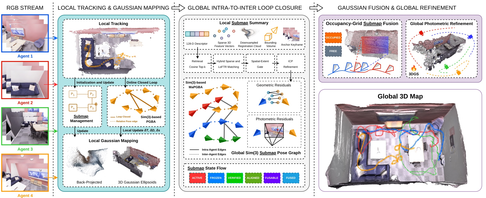

MAGS-SLAM: Monocular Multi-Agent Gaussian Splatting SLAM for Geometrically and Photometrically Consistent Reconstruction
1ETH Zurich 2University of Liverpool 3Harbin Engineering University 4University of Ottawa 5Wuhan University 6Shanghai Jiao Tong University 7Imperial College London
*Equal contribution†Corresponding author
IEEE Transactions on Automation Science and Engineering (T-ASE), 2026
Abstract
Collaborative photorealistic 3D reconstruction from multiple agents enables rapid large-scale scene capture for virtual production and cooperative multi-robot exploration. While recent 3D Gaussian Splatting (3DGS) SLAM algorithms can generate high-fidelity real-time mapping, most of the existing multi-agent Gaussian SLAM methods still rely on RGB-D sensors to obtain metric depth and simplify cross-agent alignment, limiting their deployment on low-cost or power-constrained robotic platforms, especially given the wider availability of RGB cameras.
To address this challenge, we propose MAGS-SLAM, the first RGB-only multi-agent 3DGS SLAM framework for collaborative scene reconstruction. Each agent independently builds local monocular Gaussian submaps and transmits compact submap summaries rather than raw observations. To facilitate robust collaboration in the presence of monocular scale ambiguity, our framework integrates compact submap communication, geometry- and appearance-aware loop verification, and occupancy-aware Gaussian fusion, enabling coherent global reconstruction without active depth sensors.
We further introduce ReplicaMultiAgent Plus, a benchmark containing larger robot teams for evaluating collaborative Gaussian SLAM. Extensive experiments on both synthetic and real-world datasets demonstrate that MAGS-SLAM, using RGB images alone, achieves tracking accuracy, rendering quality, and geometric quality that are competitive with or superior to those of state-of-the-art RGB-D collaborative Gaussian SLAM methods.
Method

Pipeline. Each agent receives only its own RGB stream, and the system runs in three stages.
- Local tracking and Gaussian mapping. Dense bundle adjustment coupled with joint depth-scale adjustment estimates poses and scale-consistent inverse depth, which is back-projected into 3D Gaussians. Keyframes are grouped into bounded submaps, and intra-agent loops trigger online Sim(3) pose-graph bundle adjustment.
- Global intra-to-inter loop closure. Every frozen submap is sent as a compact summary: a 128-D descriptor, sparse 3D features, a downsampled registration cloud, a bounding volume and an anchor keyframe. Retrieval, hybrid sparse and LoFTR matching, a spatial-extent gate and ICP refinement yield verified inter-agent constraints, which a global Sim(3) submap pose graph optimizes with geometric and anchor-image photometric residuals.
- Gaussian fusion and global refinement. An occupancy-grid test removes Gaussians that duplicate another agent's occupied or free space, and a final joint photometric refinement of Gaussians, keyframe poses and exposures produces the global map.
Interactive Reconstructions
Globally fused meshes with the camera trajectory of every agent, on synthetic (ReplicaMultiAgent, ReplicaMultiAgent Plus) and real-world (ETH3D, Tanks and Temples) sequences. Switch between true colour and plain geometry, or replay the trajectories to watch the agents explore the scene together.
Drag to orbit, right-drag to pan, hold Ctrl or ⌘ and scroll to zoom. On touch screens, swipe sideways to orbit and pinch to zoom.
Why Multiple Agents
A single agent reconstructs only the part of the scene it has visited. On the real-world 7-Scenes Fire sequence, each agent covers a partial region of the room, shown over a faint outline of the complete scene, while collaborative fusion yields a complete and globally consistent reconstruction. The viewpoint stays fixed when switching, so coverage can be compared directly.
Results
Collaborative Reconstruction
Photorealistic multi-agent reconstructions on ReplicaMultiAgent and ReplicaMultiAgent Plus. Each video shows the input RGB streams, the growing global mesh and the rendered Gaussian map.
Quantitative Comparison on ReplicaMultiAgent
| Method | Input | Office-0 | Apartment-0 | Apartment-1 | Apartment-2 | ||||||||
|---|---|---|---|---|---|---|---|---|---|---|---|---|---|
| Agent 1 | Agent 2 | Avg. | Agent 1 | Agent 2 | Avg. | Agent 1 | Agent 2 | Avg. | Agent 1 | Agent 2 | Avg. | ||
| Swarm-SLAM | RGB-D | 1.07 | 1.76 | 1.42 | 1.61 | 1.98 | 1.80 | 4.62 | 6.50 | 5.56 | 2.69 | 8.53 | 5.61 |
| CP-SLAM | RGB-D | 0.50 | 0.79 | 0.65 | 0.62 | 1.28 | 0.95 | 1.11 | 1.72 | 1.42 | 1.41 | 2.41 | 1.91 |
| MNE-SLAM | RGB-D | 0.28 | 0.33 | 0.31 | 0.43 | 0.54 | 0.48 | 1.21 | 0.99 | 1.10 | 0.43 | 0.74 | 0.59 |
| MCN-SLAM | RGB-D | – | – | – | 0.42 | 0.52 | 0.46 | 1.18 | 0.97 | 1.07 | 0.41 | 0.71 | 0.57 |
| MAGiC-SLAM | RGB-D | 0.31 | 0.24 | 0.27 | 0.13 | 0.21 | 0.16 | 0.21 | 0.30 | 0.26 | 0.42 | 0.22 | 0.32 |
| CCM-SLAM | RGB | 9.84 | 0.76 | 5.30 | ✗ | ✗ | ✗ | 2.12 | 9.31 | 5.71 | 0.51 | 0.48 | 0.49 |
| MultiSlam-DiffPose | RGB | 0.41 | 0.75 | 0.58 | 0.68 | 0.25 | 0.47 | 0.63 | 0.68 | 0.65 | 0.32 | 0.40 | 0.36 |
| MA-MASt3R-SLAM | RGB | 3.79 | 1.34 | 2.57 | 3.27 | 7.20 | 5.24 | 4.60 | 6.35 | 5.48 | – | – | – |
| MAGS-SLAM (Ours) | RGB | 0.47 | 0.12 | 0.29 | 0.50 | 0.42 | 0.46 | 0.59 | 0.34 | 0.46 | 0.29 | 0.34 | 0.31 |
| Method | Input | Office-0 | Apartment-0 | Apartment-1 | Apartment-2 | ||||||||
|---|---|---|---|---|---|---|---|---|---|---|---|---|---|
| PSNR↑ | SSIM↑ | LPIPS↓ | PSNR↑ | SSIM↑ | LPIPS↓ | PSNR↑ | SSIM↑ | LPIPS↓ | PSNR↑ | SSIM↑ | LPIPS↓ | ||
| CP-SLAM | RGB-D | 32.61 | 0.90 | 0.29 | 32.16 | 0.91 | 0.23 | 27.42 | 0.78 | 0.36 | 25.12 | 0.77 | 0.37 |
| MNE-SLAM | RGB-D | 28.27 | 0.86 | 0.08 | 27.46 | 0.87 | 0.27 | 25.45 | 0.73 | 0.41 | 26.16 | 0.81 | 0.31 |
| MAGiC-SLAM | RGB-D | 39.32 | 0.99 | 0.05 | 36.96 | 0.98 | 0.09 | 30.01 | 0.95 | 0.18 | 30.73 | 0.96 | 0.17 |
| MAC-Ego3D | RGB-D | 42.43 | 0.98 | 0.03 | 42.83 | 0.98 | 0.05 | 36.28 | 0.97 | 0.06 | 38.59 | 0.98 | 0.06 |
| CoMA-SLAM | RGB-D | 42.77 | 1.00 | 0.02 | 42.28 | 0.99 | 0.03 | 33.86 | 0.98 | 0.08 | 34.59 | 0.98 | 0.08 |
| MAGS-SLAM (Ours) | RGB | 43.24 | 0.99 | 0.02 | 42.83 | 0.99 | 0.02 | 36.28 | 0.96 | 0.06 | 38.99 | 0.98 | 0.04 |
ReplicaMultiAgent Plus
A multi-agent benchmark for collaborative Gaussian SLAM, with diverse indoor scenes captured by larger teams whose trajectories overlap. Besides monocular or RGB-D streams and ground-truth poses for each agent, it provides per-frame semantic labels and dense ground-truth meshes, to support research on multi-agent semantic SLAM, open-vocabulary 3D scene understanding and collaborative perception.
Citation
@article{cao2026mags,
title = {MAGS-SLAM: Monocular Multi-Agent Gaussian Splatting SLAM for
Geometrically and Photometrically Consistent Reconstruction},
author = {Cao, Zhihao and Shao, Qi and Zhai, Shuhao and Zhang, Jing and
Nguyen, Anh and Wang, Hesheng and Huang, Baoru},
journal = {IEEE Transactions on Automation Science and Engineering},
year = {2026},
doi = {10.1109/TASE.2026.3746179}
}Acknowledgements
This work was supported by the Horizon EnduRAI project under Grant Agreement No. 101294228.